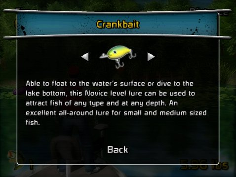

12 |
Cebos |
 |
|
A continuación seleccionarás un cebo. Diferentes cebos funcionan mejor para diferentes tipos de peces. Los cebos de flotación funcionan mejor para peces pequeños que nadan cerca de la superficie del agua, mientras que los cebos que se hunden son mejores para peces que permanecen cerca del fondo del lago. Los cebos de buceo pueden flotar en aguas poco profundas cuando se lanzan lentamente, o pueden sumergirse mucho si se los lanza rápido. Los cebos también se dividen en distintos niveles de habilidad. Los cebos para principiantes atraen peces en una amplia gama de velocidades del reel, pero no tienen la capacidad de jalar a los peces más grandes. Los cebos para expertos tienen una capacidad de tensión mayor y mejor atracción en velocidades óptimas del reel, pero no funcionan bien si la velocidad no es la adecuada. Los cebos para expertos también usan Casting Meters (Medidores de lanzamiento) más rápidos que los cebos para principiantes, lo que dificulta más maximizar la distancia de lanzamiento. Los cebos intermedios están entre los niveles Principiante y Experto.
Cada perfil comienza con un único cebo de principiante, el Crankbait,
que se puede usar para apuntar a cualquier profundidad, pero tendrá problemas para sacar peces grandes.
Una vez que se han desbloqueados los cebos adicionales,
presionar Durante una partida, puedes pausar el juego y seleccionar View Lures para leer las descripciones de los cebos disponibles. Los cebos bloqueados mostrarán los pasos que se requieren para su desbloqueo. |
 and
and  antes de lanzar pasará por todos los cebos disponibles.
antes de lanzar pasará por todos los cebos disponibles.
 |
 |
 |